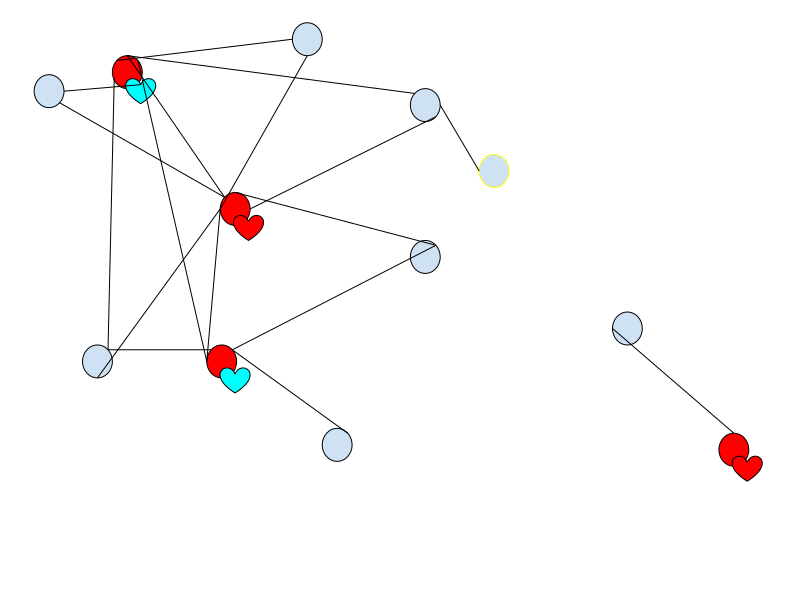

The Dither Project
What is it?
Dither is a project with the ultimate goal of creating a decentralized and privacy-respecting Internet. It is a repository of libraries, tools, ideas, and applications that allow people to communicate privately, distribute data, manage accounts, much more. It is currently being developed by @Zyansheep and (for the time being) hosted via GitHub under the libdither organization.
The aim for Dither is to replace existing centralized applications with decentralized alternatives that are unified through their use of a singular, modular protocol.
See the application document for outlines of various applications that could be built using Dither.
Core Design Tenets
It seems helpful for projects to have guidelines to help aid design and collaboration. These are the ones I've chosen for now, as with everything, they are subject to change.
Dither should be useful
- Dither is a project. Projects should be useful.
- This one probably doesn't even need to be said, but it is always important while thinking about design, to keep in mind that you eventually want to create something useful.
Dither should be modular and modelable
- Once you build something, it often gets harder and harder to add features to it unless it is clear how the parts of the system connect and you can separate your concerns. To ensure extensibility and comprehensibility for future Dither developers, modularity and modelability are key.
Dither should be interoperable
- The goal of Dither is to replace existing services and standards. This is very hard to do (see: xkcd #927). To try to avoid this fate and make transition as easy as possible, Dither should do anything necessary to make the experience the same, or better, than existing platforms and services.
- A real-world example of this working is PipeWire acting as a single program unifying nearly all existing audio APIs on linux. (and being backwards compatible with programs that use those other audio APIs).
- See Dither Interoperability for more details.
Dither should rely on itself
- This tenet is simply a reminder of the end-goal of Dither: to replace the centralized internet. So long as the other tenets are satisfied, this is the ultimate goal. (Because who doesn't want to reinvent the wheel!)
Structure
Following the first tenet of Dither, in the future the lines between these layers will blur and everything will be a module. However, the design of current operating systems don't easily allow for shared code and data, requiring a more formal structure. In the future this layered structure will be replaced with a more flexible system.
Core Process
The Core Dither Process is the part that deals with all operating system-facing operations such as data storage, establishing peer-to-peer connections with other computers, in addition to managing all Dither services and connections between them.
This "Core Process" provides a few core APIs that only certain services running in the "Service Swarm" are allowed to use for security purposes. The idea behind a "Core Process" is to create a sandboxed environment for services to run in a safe manner.
peer-to-peer connections with other computers running Dither. Currenly in the dither-sim program, this is implemented via a simple TCP stream. In the future this layer will be implemented using existing libraries such as libp2p transports, Pluggable Transports, something else, or some amalgamation of all three. The idea behind this layer is to provide as many methods of communication as feasibly possible.
Service Swarm
The service layer provides all functionality related to routing, encryption, data storage, user management and everything else. Each of these services are split up into separate modules each of which runs its own processes and communicates with other services through inter-process communication.
All these processes are managed as child processes under one "main process". The main process contains the Transport Layer implementation, the routing protocol API and APIs for managing the child services as well as managing inter-process communication between child processes.
User Interface
The application layer contains services just like the service layer that are registered under the main process. These registered service's APIs can be used by other applications.
The application layer also refers to the application's core API, which is used by the interface layer. This "core application API" can be built into the applicaiton's executable, or it can run as a service under the main process and used by multiple interfaces. This is left up to the application developers. Applications with multiple interfaces should prefer to register application APIs under the main process.
Existing planned applications may be found here.
Interface Layer
The final layer is the interface layer. This just refers to standalone applications that provide some kind of interface to the user using the services running under Dither.
These interfaces can be implemented however, but it is recommended for them to follow Dither's application design philosophy for some level of standardization.
Other Links
Inspirations for Dither
As with any creative endeavor, Dither takes inspiration from many other projects. This is a list of what parts of Dither have been inspired from other projects.
Structure
This document outlines the major structure of Dither.
System Manager
At the core of Dither is the system manager. This will be written in Rust and should only be run once on any given user account. The system manager provides a sandbox for Dither protocols and is built in a modular fashion to support any kind of setup or platform Dither might run on.
Core Services
In order to sandbox Dither services, the system manager provides certain core services such as access to storage, network, or other Dither services.
- Service Manager
- Provides any service with access the ability to organize other service's permissions, manage storage, as well as stop and start services at will.
- Network Service
- Provides any service with access the ability to establish arbitrary TCP or UDP connections.
- Storage Service
- Provides any service with access the ability to fetch and store data unique to that service.
Other services may be added as needed.
Service Swarm
The system manager acts as a kind of sandbox for all services running on Dither and facilitates communication between different services.
Services
This is a list of planned Dither services and their dependencies, note these may be split up into smaller sub-services.
- Distance-Based Routing, DBR (Network, Storage)
- Directional-Trail Search, DTS (Distance-Based Routing, Storage)
- Reverse-hash-lookup, RHL (Directional-Trail Search)
- User Manager (DBR, DTS, RHL, Storage)
- Dither Chat (DBR, DTS, RHL, User Manager, Storage)
- Dithca (DTS, RHL, User Manager, Storage)
- Protocol of Truth (DTS, RHL)
Applications
Applications in Dither will be external programs that communicate with specific services in the Dither System Manager. i.e. Dither Chat will use the Dither Chat Service Dithca will use the Dithca service.
Or applications can use a multitude of different services as needed.
Dither Anonymous Routing
Dither Anonymous Routing (DAR) is a peer-to-peer protocol for efficiently and flexibly obfuscating connections between computers.
It improves on speed and versatility over existing solutions (i.e. I2P and TOR) by incorporating latency and bandwidth estimation techniques so that intermediate relays may be (optionally) optimally chosen. It exposes this option to applications built on DAR, allowing the developers and users to explicitly dictate the trade-off they prefer between speed and anonymity for each networked application they use.
In addition, to align itself with the philosophy of Dither, DAR aims to be as generic as possible, so that different encryption schemes and transport types may be used for different connections to hedge against the risk of one of them breaking, as well as easily allowing for novel schemes that may not be rigorously tested, but have desirable properties such as the stateless encryption protocol described in HORNET.
Network Modeling
In order to figure out what paths through the network are ideal for the given application and user (trading-off latency, bandwidth, anonymity, and cost). We need to be able to model the effects of connecting and routing through different nodes. "Will connecting to 245.14.973.23 to hide my connection still reach my latency or bandwidth targets?", "To what degree will it gain me anonymity from various threat models?" "What will it cost?" etc. Users should be able to set QOL goals that they are happy with, minimum performance and anonymity guarantees on a per-application basis and have the protocol automatically figure out what nodes to select and route through. This is a general RL task however, and thus to solve it it seems likely that we'll need some general world modeling algorithms.
A world model should be able to:
- Take two IP addresses, or a series of IP addresses and a timestamp, and guess the latency and bandwidth between them.
- Take a desired latency and bandwidth and generate likely single or multiple IP chains that satisfy the desired latency, bandwidth, and cost. Or are as close to satisfying them as possible.
Ideally this world model should be trainable in a federated / decentralized fashion. It is an open problem for how this could be done without divulging local information. (Perhaps it could be incorporated into the loss function for it to be bad at predicting certain "sensitive" metrics, at least for versions of the model sent to other nodes. This would somehow have to be balanced well with the game theory of the other nodes.)
Once you do have a world model, you need to RL it. What are the rewards we are maximizing?
- Predictive accuracy of metrics outside of yourself. (Predict results of actions)
- Measurements, cost requests
- Path selection metrics
What about the incentive layer here? Lets assume we have an out-of-band currency exchange system that is anonymous.
Nodes are trying to maximize their own income from acting as proxies. Cost is similar to latency or bandwidth, its a metric you receive from pinging a node and it can be predicted.
Nodes get requests for proxy and send back price, they have some baseline resource usage and want to maximize cumulative money over time. When they get a proxy request they can either accept or send back their own price which the sending node can either accept or not. RL algorithms will then need to learn how to bargain with each other automatically within their constraints.
Peer Discovery
To form a network, there needs to be a process for new nodes to connect to existing nodes. Dither Anonymous Routing aims to allow peers to be as anonymous as possible, and thus the peer discovery method aims to expose as little as possible about nodes on the network. Specifically, as little information as possible about nodes that don’t want to be discovered, and nodes far away (latency-wise) from the new node.
TLDR: Peer Discovery must expose information about some nodes, but should only expose information about nodes that are nearby and want to be known.
For more information, check out the Discovery section.
To assign routing coordinates to nodes, there is a process of peer-discovery that functions as follows. This process happens whenever a new node joins the network.
- New node bootstraps onto the network by initiating connection to one or more existing nodes.
- New node tests response times (latency) to connected nodes (peers).
- New node requests from some subset of lowest-latency (closest) peers that it would like more peers.
- New node’s peers notify some slice of their peers that a new node would like more connections.
- Notified nodes initiate connection if they are configured to do so and measure latency to new peers.
- Notified nodes initiate connection with new nodes and new nodes measure latency to new peers.
- New node takes note of the smallest latencies of its peers and goes back to step 3 until there are no closer nodes who want to peer.
- After a certain number of closest nodes are found whose latency measurements are stable, the new node then calculates routing coordinates and is records its currently connected nodes so that it may reconnect when if went offline.
Through this process, a distributed network is formed that reflects the physical topology of the relative orientations of the nodes.
Process
A packet with an RRC can be routed to its destination via the following process:
- Node chooses the peer that will receive the packet next by comparing RRC directions
- Node subtracts next peer’s RRC from packet’s RRC
- Node forwards modified packet to next peer
The process continues until the packet’s RRC is all zeroes and the last node it reaches either is the destination node, knows the destination node, or is the wrong node in which case the packet is dropped or sent back depending on the packet type.
Usage
Compared to the global routing tables and complicated peering and address space allocation protocols that the existing internet uses. Routing Coordinates are much better for peer-to-peer applications because they are pretty much infinitely scalable.
That said, RC in some ways give away more information than traditional IP addresses do. Since the self-organized networks that use RCs reflect real-world network topologies, just knowing someone’s routing coordinate relative to you could be akin to knowing roughly where they live. This is an acceptable risk because it is much easier to do efficient onion routing on networks with RCs than those without meaning that there is no reason not to have all connections onion-routed to some degree, providing better privacy overall.
Other benefits of routing coordinates are that they have the potential to almost completely prevent denial-of-service attacks. To even attempt such an attack, the attacker must find the routing coordinate of their target. Disregarding user error, this kind of attack is essentially impossible since everything is onion-routed by default. Even if the attacker does have the target’s routing coordinate, trying to DOS a routing coordinate is like trying to DOS the entire expanse of network between the attacker and the target, the attacker(s) will be ineffective or blocked by other nodes automatically for overuse of the network. Even distributed denial of service attacks can be mitigated with additions to the protocol allowing the victim to notify the network that they are being attacked and to rate limit the attackers.
Anonymous Routing (Onions, Garlic, and all the others…)
Conventionally, anonymous routing is an incredibly slow ordeal because of how intermediate peers are selected from the network. Due to this inefficiency, onion routing protocols have been somewhat limited in what kind of privacy they can provide because low data rates and high latency was a concern. This is no longer the case with DBR, which may support all kinds of anonymous routing schemes:
- Onion Routing
- The simplest routing of them all. Simply select a list of peers and establish a route from beginning to end.
- Garlic Routing
- Similar to onion routing, but when sending packets to multiple peers at once, send them together for them to be split apart at some mid-point in the path.
- Multi-path routing
- Maintain multiple Onion routes throughout the network and randomly send packets along all or some subset of them.
- Pool Routing
- Create a group that nodes can join. All nodes randomly send randomly-sized data packets to all other nodes at random intervals, sending real data (padded) if there is data to send and sending random bytes if not.
DBR plans to use a modification of the HORNET protocol for setting up fast onion-routed links.
Preventing Network Abuse
Routing protocols that rely solely on people voluntarily hosting nodes typically only have a relatively small number of peers willing to route packets through themselves (i.e. TOR). This is why protocols like BitTorrent, I2P and IPFS have systems in place that incentivize peers who use the network to contribute back for the benefit of all.
To accomplish this behavior for DBR there must be some way to limit packets going through nodes that either don’t use the network that much or don’t have a lot of bandwidth capacity and speed up packets through nodes that contribute greatly to the network. Also, to take into consideration are the management of nodes that have inconsistent uptime or inconsistent routing.
When talking about incentives, we are talking about game theory. So lets analyze the game theoretical situation at the level of an individual node.
Constraints:
- Each node is directly connected to a fixed number of other nodes at a varying latencies and bandwidth.
- Each node wants to send traffic through other nodes to use the network.
- Each node wants to establish onion proxies with other nodes for privacy.
- Each node has set of parameters that may change over time:
- Percentage of the time it will immediately respond and route a packet.
- Amount of traffic per unit time it is willing to route on average.
- Max amount of traffic per unit time it can route.
The goal is to allow for unrelated nodes to route and establish proxies through each other in proportion to how much each node contributes in some way to the network.
Ideas:
- Each node keeps track of the amount of traffic (bytes) flowing through its itself from directly connected nodes.
- Each node only sends traffic through direct nodes it knows it has received traffic from.
- There is more to theorize about here for future research :)
Conflicts with ISP Load Balancing
(This section is WIP)
Implementing an alternative routing protocol on top of regular IP routing may pose issues for ISP routing (i.e. forcing utilising of certain links too much, causing major slowdowns). ISPs don't optimize for latency or bandwidth, they optimize for load balancing to prevent too much link utilisation. TODO: Dither should take this into account by implementing its own second-layer load balancing system that makes sure ISP links aren't overloaded.
Questions for this problem:
- How might peer-to-peer overlay networks (of various kinds) effect an ISP’s ability to do load balancing well?
- ISP simply have to do more buffering, slowing queue times for specific links, making those links become unattractive, shifting the route prioritization to ones that are less desirable -> problem is this makes those routes unusable for regular (nearby) people and are instead hijacked by through-traffic.
Research
-
Dawn - Selfish overlay compensate for careless underlay
-
If overlay networks can or do conflict with ISP load balancing effort, how can that conflict be reduced via design of the protocol?
- Maybe reimplement load balancing into the network protocol?
- What might this look like in a peer-to-peer setting?
- Maybe reimplement load balancing into the network protocol?
Some set of nodes in the network:
- Sending along certain local paths (need to be careful to not overwhelm bandwidth along local link: not likely)
- Sending along mid-range path, some room for path diversity, but if everyone is doing it, it may create hotspot: need
Main issue: A is sending large file to B, anonymously. If they route through one path, this will be a problem, if they route along multiple paths, ISPs have more ability to distribute the load.
- More paths = more chance for paths to be surveiled: is it obvious who is chatting with who? -> More obvious than just one path
- Mixnets ? -> How fast would these be for large data transfers?
Research, Inspirations & Similar Work
(List in rough order of reading of notable articles I am using to implement Dither Routing. If anyone knows of any similar work not listed here, please let me know on Matrix!)
[1] HORNET: High-speed Onion Routing at the Network Layer
- Stateless Onion Routing, improves establishment of onion routes as well as speed of forwarding.
- The paper that pretty much started the distributed Network Coodinate System field of research.
[3] Coordinate-Based Routing for High Performance Anonymity
- Applying Vivaldi to Anonymous Routing
[4] Phoenix: A Weight-Based Network Coordinate System Using Matrix Factorization
- Improvements on Vivaldi, uses Matrix Factorization instead of Euclidian Embedding
[5] NCShield: Protecting Decentralized, Matrix Factorization-Based Network Coordinate Systems
- Threat modeling on Network Coordinate Systems. Prevents Frog-Boiling attacks.
[6] DMFSGD: A Decentralized Matrix Factorization Algorithm for Network Distance Prediction
- Improvements on Phoenix paper’s algorithm.
[7] Application-Aware Anonymity, Sherr et al.
Directional Trail Search
Directional Trail Search (DTS) is a protocol for efficiently fetching a piece of stored data from a network given its hash.
It is intended to be a vast improvement over existing protocols like IPFS by removing the use of poor-latency Distributed Hash Tables (DHT) and giving up some amount of data persistence in exchange for fast anonymous retrival of popular documents and flexibly anonymous hosting, and fixing the scalability issues to create a true "inter-planetary" file system.
The Main Idea
DTS works via two forces:
- The desire of people (nodes) who want to host information and want their information to be quickly accessible.
- The desire of people (nodes) who want to access information and want to access it as fast as possible.
These two forces are corralled by DTS to create an efficient system to host and find data. First let us talk about the desire of a node who wants to host some data. This desire manifests in the form of a "data trail".
A data trail in DTS is a trail left in the network with the sole purpose of leading to a specific piece of data. Specifically, a trail is a chain of peered nodes that store a mapping between the hash of a specific piece of data, and the id of the next peer in the chain.
A data trail is formed with the following process:
- A node that wants to host information broadcasts a "trail-laying" packet that travels to a specific relative coordinate on the network.
- All the nodes that this "trail-laying" packet encounters on the way to its destination will do one of the following:
- Reject to be a part of the trail, sending the packet to the previous node in the chain. This will reflect poorly on the node if it wants to host data of its own.
- Register a connection between the hash contained within the packet and the id of the node the packet came from and forward the packet on to another node of a consistent distance away that it thinks will agree to be apart of the chain.
- Allowing nodes to either host data & be apart of trails or not host data and not be apart of trails makes sure packets flow along computers that actually host data and are likely to be relatively stable and with resources to spare.
Once a data trail is formed, it may be encountered by a "trail-tracing" packet which, once on the trail, is routed directly to the root of the trail.
However, this trail of nodes may be very thin, and thus trail-searching packets may have a hard time finding trail because they skip over too many nodes. To fix this issue, trail-laying packets will broadcast out to all known peers within a certain range that they are a part of a trail related to a specific hash. Peers receiving this broadcast will use a counting bloom filter to make a record that they are nearby a trail for a specific hash. "trail-searching" packets that come across these "nearby-trail" nodes can ask the nodes to ask all their peers within a certain radius if the peers are apart of a real trail. This casts a larger net and makes it easier to find trails without putting undue burden on too many nodes.
WIP: Section about the requesters role in the network and the expectations of the network for requesters to contribute to hosting for some time. (like bitorrent or ipfs)
Specific Structure (WIP)
Note: This is an insanely hard problem to solve well: finding the node hosting a piece of data that matches a given hash on a network. The protocol here is a formulation of a protocol that might work to solve this problem.
Every Dither node implementing DTS contains the following state:
- A hashmap that maps multihashes to its corresponding data stored on disk, so that the node may retrieve its own data.
- The size of this map should be primarily up to the node owner's discretion, depending on how much data they would like to store.
- Data may be temporarily be added to this hashmap to help with the caching of other node's data.
- A hashmap that maps multihashes to peers.
- A bloom filter containing a set of multihashes of which there are trails nearby.
Every node will store the following information about their peers:
- WIP
Downsides
While Directional Trail Search is in theory much faster and much more efficient than DHTs, it is likely not as good when considering rare data. With a DHT, as long as there is at least one node hosting the data, it will be found eventually. With DTS, there is no guarantee that a piece of data will be found (i.e. if the data trails are too far away from the requesting node to be encountered by a searching packet).
There are multiple potential solutions in order of feasibility:
- Use a DHT in addition to DTS by default (this may have privacy implications)
- Figure out how to get DTS to work better for rare files, perhaps by making it so that trails form circles around the earth and thus are nearly impossible not to encounter.
- Store routing coordinates / routing areas on the Reverse Hash Lookup.
- Implement a Network Coordination feature that tells all nodes in the network to notify a node when they find the requested data. (induces denial of service vector, probably a bad idea)
Reverse Hash Lookup (WIP)
Directed Acyclic Graph data structures (DAGs) may be elegant for storing and linking pieces of data, but they don't provide any kind of mutability on their own. This is the purpose of the Reverse Hash Lookup (RHL). RHL allows you to create a piece of data that links to two or more other pieces of data (via hash-linking) and then lookup the link given one of the linked pieces of data.
Structure
RHL has many different ways to solve the two problems of distributing links and finding links. (Links here being pieces of data containing the hash of some other object that is being "linked to"). Links could be shared only with friends or trusted individuals, links could be broadcast all over the network and re-stored by other nodes, links could be stored in blockchains or link maps maintained by centralized servers, etc. All these different use-cases may be useful for different applications, so RHL tries to generalize over all possible use-cases.
Ideas:
- A Link defines its own methods of distribution and search. (Perhaps embedded as a hashtype).
Methods of Distribution & Search
- A link can be broadcast to some set of trusted nodes (friend group), queries are done by asking friends if they have registered any links to an object.
- A link can be registered in some sort of global consensus
- Central server(s) store any links that are uploaded and respond to queries
- Blockchain storing links (all "full" nodes store all links), queries done locally
- Global Binary Tree mapping hashes to links (less space, more network activity when searching)
- A link can be broadcast via a publish-subscribe system and exist ephemerally, find beliefs by constantly listening on a topic (or to the entire network).
Potential Applications
This kinda of system is useful as a basis for other systems that need to link disparate pieces of data together for the purposes of querying or consensus. Here are just a few examples of the systems that RHL could enable:
- Comment systems. Each comment is a piece of data signed by some individual. Links can created over the comments that allow for querying some subset of all the comments, i.e.
top commentsorset of all commentsorcomments from friends. These links themselves may be immutable, but can be joined together via other links in a chain where the newest link in the chain is the most up-to-date view of the comment system. - Web of Beliefs. A justification / rule links two beliefs together and beliefs may be private or publicly shared and distributed. Beliefs justified by some rule sets may be more propagated than others (i.e. scientific beliefs). Or beliefs can be accepted or rejected based on arbitrary social conditions like "what proportion of my friends hold belief x?" (Such as is the case with names). Multiple conflicting beliefs can be held at once, such as if it is not clear which one should be accepted as default (or there are uses for both beliefs in different context, such as with definitions).
- Anonymous Interactions. Links could be generated ephemerally to prove that a public key in some trusted set of public keys interacted with a piece of content in some manner, and then added to some hyperloglog or statistical counter.
Specification Ideas
Disp type Link<Type> is implemented for whatever hash type is used in the specific link needed. i.e.
For a link to be type-valid, the objects it links to must also be the correct type. Zero-knowledge proofs could be used for this application in the future to avoid unnecessary fetching.
struct Link<T: Type> {
hash: Multihash,
valid_link: (fetch(hash) : T)
}
User Magagement
Desirable Properties
- Flexible Provenance
- A user should be able to choose how strong the link between the data they publish and themselves is. (i.e. optional / zk proof / ring signature signing)
- Flexible Privacy
- A user should be able to choose to a reasonable extent who can see the data they publish. (i.e. one-to-many group-based publishing)
- Multi-device support & Realistic recovery mechanisms from compromised devices.
- If a user looses access to their devices or a mechanism of authentication (password) or device gets compromised, there should be realistic mechanisms to recover the damage both to the public and privately.
- Anonymous Collective Feedback
- For mechanisms of collective feedback (like/dislike counters, analytics), the data associated with the feedback event should not in general be attributable to a particular group, but should be verifiable that it was a unique member of the group that did the feedback.
- Flexible Storage Permissions
- Encrypted data associated with a user, stored across many different computers, should support permission hierarchies based on the sensitivity of the data. I.e. requiring more factors of authentication.
- Web-of-trust Identity
- Data associated with a user's identity should be vouchable by other users (in a web-of-trust) or by mechanistic processes. The identifying data should
Inspiration
- Scuttlebutt
- Polycentric
Identity
Identification is needed when one party must store and retrieve data associated with another party for the purpose of specific interaction.
Formally, identification is the process by which one party (identifier) under some assumptions internally associates some external stimulus with the known identity of another party, thus changing the identifying party's behavior.
For Example:
- A service (identifying party) must identify a user (identified party) using a username and password (external stimulus) to allow the user to log in (changed behavior).
- Main Assumption: The user's password or computer they are using has not been compromised.
- An individual must identify a fellow human being using their senses before treating them not as a stranger.
- Main Assumption: The fellow human is not attempting to disguise themselves as someone else.
- When receiving an encrypted message from a friend, the receiver must identify the friend by verifying the signature of the message using the friend's known public key.
- Main Assumption: The public key truly does belong to the friend and the friend's private key has not been compromised.
Design
In Dither, there will be two general categories of identification.
- Cryptographic identification
- Characteristic-based identification.
Cryptographic identification will occur for when one needs to identify an party on other other end of a specific communication channel.
Characteristic-based identification will occur when one needs to find publically-declared associated data (i.e. public keys) of another party given only knowing certain characteristics of the other party.
Disp
The key to decentralization is effective coordination of collaborating computational components.
Disp is a programming language where programs, types, and the type checker itself are all represented as regular programs in a self-reflective combinator calculus called the tree calculus. It is being developed to solve some of the fundamental problems with Dither, and in doing so should be pretty much the end-game of programming language design.
The problems to solve are:
- For a distributed system you need to be absolutely sure your code has no bugs and never will. To do so you need formal verification against the most rigorous set of bug-denying constraints you can come up with, ideally with a compiler that is itself verified in the same way.
- We need a language that can allow users to prove arbitrary equivalences and for these equivalences to be actively applied as optimizations, ideally directly to assembly.
- For a language to not ossify over time and new ideas/designs to be able to be invented and be automatically safely adopted new designs need to be able to be formally proven to apply and safely rewrite old code dynamically at each individual user's desire.
- As a subpoint here, the surface level details of the language should be user-customizable and fit to their preferred language syntax styles, whether that be block coding, ML-syntax, C-style, pythonic or what have you.
- In order to create things fast, it is generally infeasible to spend copious amounts of time worrying about specific algorithms and it would be ideal if programmers could simply write constraints and have an optimizer satisfy them. i.e. programming-language-native program synthesis.
The Core Idea: Types as predicate functions
The Core™ idea of disp is that type systems (the feature of compilers that handle whether or not a given program you've written fits some constraints) should be definable in the language itself. Thinking about type systems for a second, you essentially have a program in the meta-language that looks like this: check(term: Term, typ: Typ) where Term and Typ are some special datastructures. If you think about this though, specifically the case where you partially-apply typ to check, you get a function that just checks if a given term is of a particular type. But what if you could just define this as its own function?
This is what disp does and it makes it so that types are fundamentally first-class objects in the language, i.e. simply just functions that inspect some encoding of some data, and return true or false. More on this in Universal System of Types.
The key part to make this happen being "inspect some encoding of some data" and this is where the backend combinator calculus disp is built on comes in. It's called the tree calculus (Invented by Barry Jay, with development help by Johannes Bader) and it allows you to (similar to quote in lisp) directly inspect arbitrary trees (which can include datatypes and functions).
The Solutions
Each of the problems above can be pretty easily solved downstream of types-as-predicates plus the tree calculus:
- Formal verification: A type can encode any constraint you can compute, up to and including full specifications ("this function sorts its input"). And because the type checker is itself disp code, it can be checked by the same machinery it implements, instead of being a pile of trusted compiler internals.
- Provable optimization: Equality between programs is just another type, so "these two programs always produce the same result" is a proposition you can prove, package up, and share. Combined with hardware modeling to judge when a rewrite is actually faster, optimizations become a library anyone can contribute to rather than a compiler release.
- No ossification: Since the type system is a library, new disciplines can be adopted (or not) per user without forking the language. And since programs are nameless trees identified by hash, code deduplicates naturally across Dither, names and syntax become personal rendering layers on top, and proven equivalences let new designs safely rewrite old code.
- Program synthesis: Partially apply the type checker to a specification-type and you get a function that accepts or rejects programs. Add scoring functions for speed and size and you have exactly the thing an optimizer can search against.
Current State
There is a working prototype at github.com/libdither/disp. A small TypeScript runtime evaluates trees; everything else (the kernel, the standard types, the test suite) is written in Disp itself. See Implementation for what exists and what doesn't yet.
Inspirations
- Tree calculus (Barry Jay) for a substrate where programs can inspect programs.
- Lisp for treating programs-as-data in the first place.
- Idris, Coq, Agda, Lean & Friends for dependent types.
- Unison & IPFS for content-addressed, deduplicated code.
- Rust for its safe & fast zero-cost abstractions.
Universal System of Types
a type system is a logical system comprising a set of rules that assigns a property called a type to every "term"
Who chooses the rules that assign types to terms? What makes one set of rules better than another? Some type systems are more general than others, some are more easily compiled into efficient bytecode, some allow for writing complex mathematical proofs. Exactly how large is this design space?
Disp captures the entire design space of possible type systems by generalizing the concept of types:
To make a long story short, a type is simply a program that returns true, false, or loops forever when given the source code of another program.
This allows the programmer to define their own type system in Disp. Or just use a pre-made one.
The Implementation
In Disp, every program is a tree, and trees are data that other programs can inspect. So a type can literally be a function: give it a program, and it tells you whether that program belongs to the type. Bool is a function that accepts exactly two trees (true and false). Nat accepts the trees that represent counting numbers. Checking x : Nat means running Nat on x and seeing what comes back.
The tricky part is function types. To check that some f has type Nat -> Nat, you can't just run f on every number (there are a lot of them). Instead, the checker mints a hypothetical number: a sealed token that answers "I am a Nat" when asked its type, but reveals nothing else. It feeds this token to f and watches what happens. If f tries to peek inside the token, checking fails. If f produces something that checks as a Nat anyway, then f works for any number, because it never depended on which one it got.
Since types are just programs, things that would normally require new language features come for free:
- A dependent type (a type that depends on a value) is just a function that returns a type.
- A refinement like "even numbers only" is just a stricter checker.
- A proposition is a type whose inhabitants are proofs, so the same machinery checks programs and theorems.
The standard library comes with all the familiar types (Bool, Nat, function types, pairs, equality, etc.), but none of them are built in. They are ordinary definitions, and you can read them, swap them out, or write your own.
The mechanics of how checking stays sound (what the sealed tokens are, and what programs are allowed to do with them) are sketched in Implementation.
Syntax
Disp currently has one concrete syntax, and there isn't much of it. A .disp file is a sequence of definitions, tests, and imports. Here is a representative chunk:
open use "lib/prelude.disp"
// The identity function. {x} -> x is a function literal.
id := {x} -> x
test id t = t
// A typed definition: addition on natural numbers.
add : Nat -> Nat -> Nat := {n, m} -> nat_rec ({_} -> Nat) m ({pred, ih} -> succ ih) n
test add 2 3 = 5
The pieces:
name := exprdefines and exportsname.let name = exprdefines something private to the file.name : Type := exprattaches a type. The annotation is not just a comment for the reader, it makes the compiler run the type (which is a program) against the definition when the file loads.{x, y} -> bodyis a function of two arguments. Binders can carry types, as in{x : Nat} -> body, and a function type is written the same way:{x : Nat} -> Nat, or justNat -> Natwhen the result doesn't depend on the argument. This one form covers ordinary functions, generic functions, and dependent types.test expr = expris an assertion checked every time the file loads. The test suite for the language is mostly files like this.use "path"loads another file as a record of its exported names;opendumps those names into scope.{ a : Nat, b := double a }is a record type with a derived field: give it anaandbis filled in for you.
There is also match for case analysis, if/then/else, and a hole marker _ for "let the compiler figure this out". That is most of the language. There are no keywords for classes, interfaces, modules, or macros, because records and functions end up covering those jobs.
Fair warning: the syntax is still in flux. It exists to get trees into the computer, and the trees are the real program, so syntax decisions are intentionally low-stakes. The authoritative grammar lives in SYNTAX.typ in the repo.
Syntax Agnosticism
Syntax is one of the most visible barriers separating different languages from each other. It is easy to distinguish between Lisp and C, BASIC and APL, Haskell and Fortran. All these languages can pretty much do the same things, but their different syntax plays a big role in preventing programmers experienced in one from trying out another. Syntax is also where language communities waste the most energy: arguments about braces and keywords (bikeshedding) stall features that everyone otherwise agrees on.
Disp's position is that syntax is not what a program is. A Disp program's identity is not its text. Source text is parsed into a tree, and the tree is the program: it is what gets type checked, what gets evaluated, and what gets hashed for naming and sharing. Format the same definition differently, or rename every variable in it, and you get the same tree, byte for byte. The text is just one rendering.
Today Disp has just the one concrete syntax described above, so in practice you are looking at one particular rendering. But nothing downstream of the parser knows or cares what the source looked like, which leaves the door open for things that are very hard to retrofit onto text-based languages:
- Alternative grammars. A different surface syntax that parses to the same trees is a frontend, not a fork. Code written in one style stays usable from any other.
- Personal rendering. Since names live outside the trees, your editor could show you the same library with your preferred naming conventions, or in your native language.
- No more bikeshedding. When people disagree about how something should look, both spellings can coexist as long as they mean the same tree. Defaults can be picked (and re-picked) by something like persistent voting without breaking anyone's code.
The eventual goal is for Disp code to be stored and shared as trees, with text generated on demand in whatever style the reader prefers. Switching between styles should be as simple as a click of a button.
Names
A Natural Idea
A word in a language is a label to which we assign a definition. These definitions may be physical or abstract, but in a programming language, a definition is a piece of code.
id := {x} -> x - We are fitting the label "id" to the program {x} -> x.
Words in natural languages may have more than one definition, yet in conversation we usually intend only one of them, and the listener works out which from the context. If we are talking about garnishing food, you mean adding something, whereas if we are talking about garnishing wages, you mean taking something away. Nobody has to announce which dictionary entry they intend.
Contexts also exist in programming languages: namespaces, modules, classes. But unlike real conversation, the computer can't just "figure it out" (yet). The programmer has to spell out exactly where in a meticulously organized hierarchy of modules every name lives. This puts a special strain on the programmer, who must keep that whole pre-defined hierarchy in their head just to program effectively.
The goal: remove this burden by resolving names from the context of the program, the way a listener does.
Structure
In Disp, names and programs are kept strictly separate. A program compiles to a tree that contains no names at all: variables are compiled away into the tree's structure, so two definitions that differ only in naming (or formatting, or syntax style) produce the identical tree. The tree's hash is the program's true identity.
Names are then just labels that people attach to hashes. A .disp file is, in effect, a record mapping labels to trees. This has a few nice consequences:
- The same program may be named differently by different people, in different styles or different human languages, without anyone forking anything.
- Renaming is free. It touches the label layer, never the code.
- When code is shared over Dither, identical definitions deduplicate automatically, no matter who wrote them or what they called them.
Resolving from Context
A label-to-hash map is the simple version. A perfect way to model the richer version is a knowledge graph: a name may resolve to many different programs, and the scope of possibilities is narrowed down by the surrounding context (the types in play, the file's imports, specifically declared contexts), much like a conversation does. Type information makes this more tractable than it sounds, since most candidate meanings of a name simply won't fit where it is being used.
Programs from Specifications
The long-term goal behind Disp: I want to be able to synthesize the best possible program given a specification.
Unpacking that sentence: a specification is a type, and in Disp a type is a program that checks other programs. So the type checker can be turned into a function that takes a candidate program and returns 1 or 0. Combine that with functions that measure other things you care about (speed, memory usage, code size) and you have a scoring function: a single program that looks at another program and tells you how good it is.
Once "how good is this program?" is itself a program, writing software can be turned inside out. Instead of writing the program, you write the scorer, and an optimizer searches for a program that scores well: one that is formally correct (the type checker accepts it) and efficient along whatever axes you measured.
For this to work, a few things have to hold:
- Programs must be data, so that the scorer can inspect candidates and the optimizer can build them. This is what tree calculus gives Disp.
- The specification language must be strong enough to say what you actually mean. That is what the dependent type system is for: "a sorting function" can be specified precisely, not just "a function from lists to lists".
- Performance must be measurable without guesswork, which is what the rest of this page is about.
Provable Optimization
The whole business of computing faster in general comes down to finding new structures and algorithms that contain the same information as the old ones, but can do certain computations faster.
For example: multiplying by 2 can be done two ways on a CPU, through the multiplication instruction (slow) or bitshifting (very fast!). Same answer, different cost. A bigger example might be swapping one data structure for an equivalent one with better O(n) behavior, which only pays off past a certain dataset size. Real programs are towers of choices like these.
Today, these substitutions happen in two ways. Compilers apply a fixed bag of rewrites that their authors hand-picked and trust. Programmers do the rest incrementally by hand, using benchmarks as a form of proof. Ideally all optimization could be done by the compiler, but that compiler would have to have knowledge of every possible implementation of every algorithm and when each one wins.
Disp aims to solve this by making optimization a library instead of a compiler internal. Since Disp programs are data, and equality between programs is something the type system can state and check, an optimization can be packaged up as: here are two programs, here is a proof that they always produce the same result, and here is the evidence about when one is faster. Such a package can be:
- applied manually, like importing any other dependency,
- found automatically, by a compiler searching the library for rewrites that apply to your code (with results recorded for subsequent runs),
- shared safely, because the equivalence proof is checked on arrival. You don't have to trust whoever sent it.
The "when is it faster" half is the harder part, since benchmarks are noisy and machine-specific. That is what hardware modeling is for.
Hardware Modeling
How do we generate fast code?
Optimizing compilers generate fast code through intermediate representations and various techniques for figuring out what code is needed and what code is not. These strategies are mostly arbitrary and not easily improvable: a programmer has to go through and figure out which optimizations are worth the compiler computation cost and which aren't, and there are an immeasurable number of trade-offs and potential improvements for any given piece of hardware.
How do we create fast algorithms?
We typically write algorithms we think will run fast and then compare them to other algorithms using benchmarks. However, benchmarks have so many confounding factors that it is difficult to compare two of them and make definitive conclusions. The same algorithm may run faster or slower depending on a bazillion different factors, down to the memory layout the compiler happened to pick.
To create efficient code, we must have a model of how that code is run. Typically this model is held in the programmer's mind and expressed through compiler and algorithm design. Instead of holding it in our forgetful, biased brains, it might be a good idea to have a software-defined model of our hardware, so that we can prove (or at least have really good heuristics that check whether) our optimizations and algorithms are actually faster.
What such a model should account for:
- Modern CPU features: pipelining, superscalar and out-of-order execution, branch prediction.
- Differences between generations of the same architecture.
- Everything else that moves the needle: RAM latency, cache behavior, GPU parallelism.
Simple models could be hand-built from published data like Agner Fog's instruction tables. For open hardware (RISC-V, say), more sophisticated models could be derived from the actual logic design.
Benefits of this approach:
- No more annoying benchmarks. A faster algorithm can be provably faster for a given model. (Benchmarks still get used to compare different models of a hardware system, but those benchmarks can be much more sophisticated and account for more confounding factors.)
- Faster optimization adoption. With models and equivalence proofs, optimizations can spread through a public database without a compiler release in between:
- Bob finds a new optimization for a certain pattern of expressions.
- Bob proves it is faster for a well-trusted model of x86_64 CPUs.
- Bob broadcasts the optimization to everyone.
- Everyone's computers check the proof.
- Everyone's programs get faster.
Closing the Loop
The really interesting part is what happens once all of this feeds back into itself. The type checker is a Disp program, so it too can be scored and optimized. The optimizer can be pointed at its own components. The hardware models can be refined by the very search they accelerate. And a large enough library of proven-equivalent programs is a perfect dataset for training an AI to find new equivalences. Every piece of the system is a candidate for the system to improve, which is why so much of Disp's design is about keeping everything (checker included) inside the language rather than bolted onto it.
This is all a long way off, to be sure. What exists today is the foundation it requires: a calculus where programs are data, and a self-hosted type checker on top of it. The optimizer is future work, and an external search process (combinatorial, neural-guided, or both) will probably have to bootstrap it before it can take over its own improvement.
Implementation
Disp has a working prototype, developed at github.com/libdither/disp. This page is a snapshot of how it is built and how far along it is. There is also an interactive walkthrough that builds everything below from scratch with runnable examples, though fair warning: it describes an older version of Disp, and it was largely AI-generated, so it reads like it.
The Substrate
Everything bottoms out in tree calculus: programs are binary trees, and there is a single reduction rule for applying one tree to another. A small TypeScript runtime implements this rule, along with a parser for .disp source files and a compiler that turns parsed definitions into trees.
One implementation detail matters a lot: trees are hash-consed, meaning structurally identical trees are stored exactly once, and comparing two trees for equality is a single pointer comparison. This is what makes "same code = same hash" cheap enough to use as the language's notion of identity.
The Kernel
The type system is not in the TypeScript. It is written in Disp, as a small kernel of .disp files, under a strict discipline:
The in-language code is the specification. Host code is only allowed to be an optimization of it.
Since types are programs that check other programs, most of the type system is plain library code. The kernel proper is just the machinery that plain code can't be trusted to build: it mints the sealed "hypothetical value" tokens used to check functions, and runs candidate programs under a watcher that keeps them from peeking inside those tokens. A program that checks out on a hypothetical input is sound for every input, and the watcher is what makes that argument hold. Everything else (Bool, Nat, function types, records, equality and its proof rules) is ordinary library code built on top, and the test suite is itself written in Disp.
What Exists / What Doesn't
Working today: the runtime, the parser and compiler, the kernel, a standard library (numbers, lists, options, results, pairs, sets), dependent records with derived fields, and a few hundred in-language tests, including ones that pin down the soundness boundary by checking that known attacks on the checker fail.
Not yet built: erasing checks from verified code so it runs at full speed, a proper effects story for talking to the outside world, better error messages, and the optimizer. The full design, including the parts that are still on paper, lives in the spec documents in the repo (TYPE_THEORY.typ, SYNTAX.typ, COMPILATION.typ).
Dither Application Index
List of application Ideas
- Dither Chat - Community Chat application aiming to replace Discord. Provides e2ee encrypted DMs, voice chat, servers, voting, and integration with most other chat protocols.
- Dithca - Comprehensive & Versatile decentralized comment system where anyone can comment on any type of data structure on Dither. Can interface with most other centralized comment systems and deal with misinformation & crediting using a comprehensive community flagging system.
- Can be used to create Reddit / Twitter Replacement. Can be integrated into other Dither applications or ported to web.
- Dithgit - Github on Dither
- Dithix - Dither Resource Manager: Manage and cache any kind of resource, interface between the Merkle Tree and the Filesystem.
- Nomia on Dither - Nomia on Dither,
- Tree of Math - Directed Acyclic Graph linking a standardized data structure for defintions and proofs together based on set theory creating a comprehensive tree of knowledge.
- Dither Coin - Cryptocurrency that solves all the current problems and creates a complete digital replication of cash (being decentralized, anonymous, non-volatile, and difficult to trace).
- Dither DEX - A all-faceted decentralized exchange to facilitate trade any kind of real or virtual asset. Supports meeting up in real life or exchanging other virtual assets anonymously and securely. Also supports moderation, karmic filtering
- Protocol of Truth
Other Application Ideas:
- Manga & Reading App
- UI will be similar to Tachiyomi, but will also support book reading. Pulls content from various websites and stores on Dither. Written in Flutter, desktop & mobile versions. Supports comments through Dithca. Has built-in feature for paying for translation & replacing bad translations with better translations if they are made.
- YouTube replacement
- pulls and stores videos in a decentralized, uncensorable manner from any site that youtube-dl supports
- Built-in chat (Using Dithca protocol)
- Community-generated captions, sections, sponsor segments (pulled from sponsorblock) flagging etc.
- Support for likes, view counting (and congregating), and "Hearts" (method of giving Dither Coin to creators).
- Automatic community flagging of stolen/used content (including music, other people's videos, meme origins, pretty much anything)
- Community misinformation flagging of content (interfaces with Dithca)
- Peer-to-Peer Exchange
- Allow for the exchange
Dither Chat
What is it
Dither Chat is a decentralized communication application using the Dither protocol. Servers are communally hosted with local consensus. Bots and plugins will be supported and also communally hosted. tl;dr Discord but decentralized and better.
Users & Sync
- Each user may have multiple Peers (devices that Dither is installed on)
- Chat Event history can be optionally synced across Peers.
- A peer may host multiple users
- Each UserId must have at least 1 peer that hosts it.
Chat Events
- All Events are signed with the private key of the person who sent it (these will be verified with a config option to let through or ignore unsigned or incorrectly signed events)
- Chat Message structure
- Date sent, last edited, markdown data / embed json, UserID mentions, emoji reactions
- Rich Presence (updating custom statuses and online/offline status)
- Optional storage - can store presence update history (off by default)
- Optional sending, extracts information about what you are currently doing and updates your friends. (on by default)
- Customization options to only share with certain friends
Event Storage - Storage of a sequence of events in memory or storage
- Stored as hash-linked local blocktree that messages are added to and new blocks are created when a certain amount of time elapses between the last message sent or max block size exceeded. Block size can be set to 1 to prevent messages being ordered out-of-order.
- Indexing can be done on a by-block level (TODO: more customization options needed)
- Block structure can allow for thread branching & thread conversation movement across users. (e.g. create a group dm on top of an ongoing conversation)
Trusted Friends Application API
- Option to rank friends manually or by how much you chat with them
- Can mark friends as “Trusted, Neutral or Untrusted”
- Friend rank can be used by other applications
- e.g. for Stellar Consensus Protocol quorum selection
Chat Interface
- Built-in markdown formatting + advanced chat box (similar to discord)
- Link Displaying
- Metadata can be sent so receiver doesn’t have to send request to web pages
- TODO: Do we need to worry about invalid metadata being sent, tricking the user? Perhaps just scanning for suspicious domains is enough.
- Receivers can choose if they want to fetch link data, only fetch commonly used sites (e.g. youtube, twitter, soundcloud etc.) or not fetch anything at all and only display sent link metadata
Direct Messaging
- Simply sending JSON-encoded message/other events to UserID on Dither
Group messaging
- Messages are broadcast over gossipsub and conflicting blocks are ordered by time.
Servers
- Servers are communially hosted by the moderator's computers. However, the owner has full control over the server and can choose who can assist
- Red Nodes are hosting nodes, blue nodes are members. Blue node with yellow stroke is proxying it's connection to the server

Image of a possible dither-chat server arrangement
Roles, Tags & Colors
- To distinguish people in a server, there are roles, name colors, and tags
- Tags are shown next to tagowner's name as a small icon (like in Discord)
- By default there is only 1 tag enabled for a server: the Owner tag.
- There are other tag presets such as Donator, Moderator & Member
- Custom tags can be created and be attached to a specific role.
- Tags should be displayed in order of importance
- Roles can be made for anyone and can have permissions attached to them
- Roles and can also be organized into hierarchies where users can be ranked-up to posses a higher role (usually with more permissions)
- Each role has a color and color priority assigned
- This is used to determine what color a user's username should be assigned
Protocol of Truth
This is a protocol of back and forth debate with the aim to evaluate the quality and truthfulness of content posted to the internet.
If you have ever seen a photoshopped post on social media, or a video citing a badly done study you will know that it is incredibly hard to figure out how well-researched a piece of content is at first glance. This Dither protocol aims to inform through discourse the truthfulness of a given piece of media to anyone who might come across it.
The Process
The process for the Protocol of Truth is carried out by trusted individuals (chosen by a karma system). The steps are as follows:
- The Media is examined for a set of assertions it makes as well as deductive and inductive reasoning made using the assertions. This creates a "Assertion Graph".
- Once the graph is constructed and properly cited (i.e. each assertion should provide some link to the part of the media it was extracted from) assertions may be supported or criticized.
- Assertions in "Assertion Graphs" may be shared between different media and thus the supporting evidence presented by one media may be used in the justification of another. This supporting evidence may be found independently or through the author's cited sources.
- Each Assertion in the graph may be labeled through a persistent voting scheme under the following categories of deduction type, truthfulness and standard of evidence.
- Deductive / Inductive - What kind of assertion is it.
- Truthiness - How the trusted community rates the assertion in terms of truthfulness.
- Inherited - The assertion is deduced from the assumptions, therefore its truthfulness is inherited from the truthfulness of the assumptions.
- Likely True - The assertion is likely true
- Likely False - The assertion is likely false
- Ambiguous - The truth of the assertion cannot be satisfyingly asserted either way.
- Standard of Evidence
- Statistically Significant - The assertion is supported by sound scientific observation or experiment.
- Personal Experience - The assertion is a personal observation, it is subject to individual bias.
- Common Knowledge - The assertion is generally held to be true, but there is no specific evidence to support it. i.e. stuff like "thing X exists" or "hammers are generally used to hammer in nails". There is no hard evidence for it, but it is generally held to be true. This is the least powerful standard of evidence and should be replaced with a more powerful form if at all possible.
Fractional Funding
This idea aims to solve the issue of effectively funding peer-to-peer creative endeavors.
Rough Description
One really big idea which I think would improve the content economy (i.e. remove dependence on ads or sponsorships and make it more feasible for small creators to make a living) would be to have a system similar to YouTube premium where you pay a monthly subscription and the money gets distributed among the creators you watch, but instead of it being distributed among everyone you watch, its distributed only to people who make videos that you click a certain button on (lets say its like a heart-shaped button next to the "like" button), and you can click it multiple times to give multiple "shares" of your monthly subscription. Then these shares are distributed to all these videos at the end of the month, but instead of simply going to the uploader of the video, there is a system that tries to identify either via user feedback or AI or something else parts of the video/content that were made by the original uploader, or that where taken from elsewhere to create a "fair" monetary distribution for that video. (i.e. to pay the artists and thumbnail drawers and anyone else) and then depending on each user's preferences the money from each video can either go to everyone equally (weighted by distribution) or they can add further weights to prioritize people who have less income or things like that.
Formal Description
Users
- People who consume content and set aside some fixed amount of money to give to creators.
Content
- Pieces of data (videos, images, writing, etc.) by credit for its creation can be proportioned to some set of humans.
Creators
- People who upload/remix content.
Goal: Take money from users and give it to creators in some fair manner.
Idea for Process to achieve Goal:
- Each user watches a video and gives to it some fixed number of shares of monthly money they've set aside.
- At the end of each month the user's preferences on how money should be distributed for each video is sent to creators.
Application Design Philosophy
Application APIs should be future-proofed as much as possible
Application GUIs should be generally be as cross platform as possible.
There should be different modes of use for different user skill levels to try and accomidate as many people as possible.
- These modes should enable/disable various aspects of configurability in the application
- Simple mode should be super easy to use for anyone and come with a quick tutorial
- Configuration options should be assumed as much as possible,
- Default mode should come with a tutorial and explain how modes work and how to change them
- Advanced mode assumes the user already knows how to use the app or can figure it out on their own. All configurability functionality should be enabled.
- Application developers should strive to implement as much configurability as possible into every aspect of their application for complex users.
- For desktop applications, configuration on a small level (for specific contextual buttons or features) could be shown through right-click menus.
- For mobile applications these configuration items can be shown through a long-press.
Why Copyright is Cancer
Copyright is ineffective in the internet age. Any piece of content can be pirated on a massive scale without the original creator even knowing. The only thing copyright does is suppress derivative creation on forums with strict copyright adherence. See these videos on why the current copyright system is broken and why it makes no sense. This document outlines an alternate system of funding creation that Dither aims to create.
Have a decentralized & democratized forum of communication and publication that no institution or individual can meaningfully obstruct. Dither is a protocol for creating decentralized applications.
Provide a direct connection of support between the consumers and the creators allowing people to directly support creators for the content they produce (Paying for Production, not Distribution). Even huge projects like Marvel movies or video games can be supported through community fundraising. Each production raises the reputation of the artist(s), allowing them to raise more money from their fans for the next project.
Preventing artists from having control over their art allows all artists to use and adapt and recreate the work of other artists. Imagine all the games and movies that were super hyped up but totally flopped. If anyone was allowed to make anyone else's work but better, artists have an incentive to make good stories so that they can raise money for their next project, instead of making something crappy and making all their money off of preorders. This would also prevent the fragmentation of distribution services as no one entity can have exclusive control over a piece of content.
But What IS a Monad?
This is an article that defines what a Monad while trying to stay as close as possible to its roots in Category Theory.
If you've ever heard of monads in the context of functional programming, you've likely also heard that they are just "Monoids in the Category of Endofunctors". But what does that even mean?
Well for one, this quote could use some more detail. The more descriptive quote is: "a monad in is just a monoid in the category of endofunctors of , with product replaced by composition of endofunctors and unit set by the identity endofunctor."
Throughout this article, we will define "Category", "Endofunctor" and "Monoid" in a fictional programming language, and put these definitions together to define a Monad.
A Category (designated using curly letters, i.e. ), for the purposes of this article, is simply some defined set of mathematical objects (numbers, values, types, terms, or even categories themselves) as well as some set of "morphisms" defined between the objects. A category also has some conventions such as:
- Every object has a morphism to itself (called the identity morphism)
- Morphisms can be combined together into other morphisms much like function composition.
- Morphism composition is associative.
Functors in category theory are simply morphisms in a "category of categories". Where categories are objects and functors are just morphisms that map one category to another. This can be visualized at either a high level of abstraction where the functor is just one arrow between two categories (). Or at a lower level where a functor could be represented as many parellel arrows uniquely mapping every object and morphism in category to an object or morphism in category .
Endofunctors are just the special case where the two categories and are the same category. Endofunctors are essentially just a mapping between each object and morphism in a category to another object/morphism in the same category.
Endofunctors come up often when working in a specific Categories. For example all the types in a programming language, form a category, where the morphisms are functions defined between them. This category is called Type, and can be thought of as the "type of types".
There are many programming languages that have endofunctors. Option in Rust, Maybe in Haskell, or really any kind of wrapper type in any language is technically an endofunctor. While most languages have endofunctors, most don't have a powerful enough type system to formalize the definition of endofunctors itself. (For rustaceans, think of it like a trait that you can implement for type constructors like Option or Vec, not Option<T>, just Option by itself. this is not yet possible in rust at the time this article was written).
When defining what it means to be an Endofunctor formally within a given Category of objects (i.e. a Type System), one needs a powerful dependently-typed lagnuage. For the purposes of this article, we will be using a fictitious dependently-typed language. The following is an outline of some of the general features of the language.
Pseudocode Definitions (skip this if you think you can grok the psuedocode first try):
#![allow(unused)] fn main() { //This binds some name to a value and an optional type in some context. The value may be a type (like Vec(A)) or a value (like `3`) let <name> [: <type>] := <value> }#![allow(unused)] fn main() { // A name bound to a value may be given a valid type, or one will be inferred. // This will have an inferred type of `Nat` because 3 is most likely to be a natural number let three := 3 // The type of `four` is specified to be `Int` (i.e. an integer). This is valid because while 4 is inferred to be Nat, Nat is a subset of Int (integers). let four : Int := 4 // This is a type declaration. `Likelyhood` is defined to be a set of two numbers of type `Nat` and `Float`. Optionally, two names have been assigned to these numbers: `count` and `probability`. Curly braces represents un-ordered sets of objects. The inferred type here is the type of all types: `Type`. let Likelyhood := { count: Nat, probability: Float } // The above definition is semantically equivalent to this definition: let Likelyhood := { probability: Float, count: Num } // But the above two expressions are semantically different from this: (Brackets represent an ordered set, i.e. a list) let LikelyhoodOrdered := [ count: Num, probability: Float ] }# If you are used to haskell-based currying the first two definitions of `Likelyhood` would be similar to providing two constructors for the same object like the following: Likelyhood_a : Num -> Float -> Likelyhood Likelyhood_b : Float -> Num -> Likelyhood # But the 3rd definition would only be equivalent to Likelyhood_a#![allow(unused)] fn main() { // type constructors can be defined like this, with an implicit `->` between `{A:Type}` and `{ x:A, ... }` for structure types. let Vector3 := { A : Type } { x : A, y : A, z : A } -> { x, y, z } // or like this using the `Struct` constructor. let Vector3 := { A : Type } -> Struct { x : A, y : A, z : A } // type constructors may also be defined for enum types. let Option := { A : Type } -> Type; let Some : {A : Type} { a : A } -> Option(A); let None : {A : Type} -> Option(A); // or like this using the `Enum` constructor. let Option := { A : Type } -> Enum { Some { a : A }, None, } // Terms can also be named and typed, but left undefined (like how functions in rust traits don't need to be defined immediately) type add_one : Num -> Num // This is defining add_one in accordance with its previous defined type. It would be an error to define add_one twice with different implementations in the same context, or for the definition to fail to typecheck with the defined type. let add_one { a } -> a + 1 }
Okay now that we have pseudocode out of the way, we can get to defining an endofunctor :D
In this language, Endofunctors can be defined as a dependent collection of two functions: obj_map: A -> F<A> which maps the object of the category, and a function func_map that takes an arbitrary function A -> B where B can be anything and returns a function F<A> -> F<B>, mapping the morphisms from the initial object. When this definition is used as a "type class" (think trait or interface), it allows the user to abstract over a specific endofunctor definition and refer to all endofunctors as a collective.
#![allow(unused)] fn main() { // An Endofunctor is a class of type functions that takes a type constructor F of type `Type -> Type` (i.e. a type constructor / wrapper). Classes are essentially partially defined functions where the return value (implementation) is only valid if it has been implemented. let Endofunctor := { F : Type -> Type } -> { // Specifies how the endofunctor maps objects of the category `Type` to other objects in `Type` using the type constructor `F` type obj_map : { A: Type } -> { obj : A } -> F(A); // Specifies how the endofunctor maps functions between objects in the category `Type` to other functions in the "extended" F(Type) category. type func_map : { A : Type, B : Type} { func : A -> B } -> F(A) -> F(B); } }
Examples of various type constructors and specifications (implementations) of the Endofunctor class.
#![allow(unused)] fn main() { // Option is a generic enum, i.e. a function of type `Type -> Enum` let Option := { T : Type } -> Enum { Some[T], None, } // Defines the Endofunctor "function" for a specific type constructor. let impl_option_endofunctor : Endofunctor(Option) := { let obj_map := {A} Option{A}::Some // Returns Option{A} -> Option{B} from `func : A -> B` let func_map := {A, B} {func} -> ( { fa : F(A) } -> match fa { Some[t] => Some(func(t)) None => None } ) } }
#![allow(unused)] fn main() { // List is a generic List, i.e. a function from Type -> Enum. let List { T : Type } -> Enum { Cons { list : List T, value : T }, // Recursion defined implicitly Nil, } // Defines a term of type Endofunctor(List). let impl_list_endofunctor : Endofunctor(List) := { // Creates a constructor that takes a `value : T` by partially applying the List::Cons variant. let obj_map := {A} List{A}::Cons { list: List{A}::Nil } let func_map := {A, B} {func} -> ({fa : F(A)} -> match fa { Cons{list, value} => Cons(func_map{A,B}{func}{list}, func(value)) // func_map is recursively defined for list Nil => Nil }) } }
#![allow(unused)] fn main() { // Generic Identity Function Constructor, we need this to define unit for the Monad. let identity : [T : Type] [T] T := [T] [v] v }
NOTICE: New Syntax / Convention, identity is the name assigned to the expression [T] [v] v. But that expression has also been associated with a type ([T : Type] [T] T). The type of identity is automatically assigned the name (translated from snake_case to PascalCase): ^Identity.
There is analogous syntax for finding a value defined for a given type. This may not always resolve because multiple values could be defined for a given type.
Example: to refer to impl_option_endofunctor, you can instead infer the definition via: _ : Endofunctor(Option).
This also works when defining "implementations". You can use _ to not define a name, and instead let type inference do its job.
#![allow(unused)] fn main() { let _ : Endofunctor(Identity) := { // object map returns the identity function on `A` (i.e. A -> A). let obj_map := {A} identity(A) // func_map returns the function as-is because identity does nothing. let func_map := {A, B} {func} -> func; } // The above is somewhat equivalent this in rust :) impl Endofunctor for Identity { fn obj_map<A>() -> impl Fn(A) -> A { |a| a } fn map<A, B>(func : impl Fn(A) -> B) -> { func } } }
OKAY, Now we can get back to defining the Monad! According to category theory, a monad in a category is a monoid in the category of endofunctors of some other category. We know what endofunctors are, what what is a Monoid?
Wikipedia describes a monoid (the algebraic version) as an set () equipped with a binary operation we will call "multiplication" () and particular member of the set called the "unit".
To translate this into a typed programming language, we will define a monoid as a type class (a.k.a. trait / interface) that can be implemented for objects. The definition of the type class is parameterized on the set and includes a set of two morphisms, unit and multiplication as well as the two monoid laws of associativity and identity: , and
#![allow(unused)] fn main() { let Monoid := [ M : Type ] { type unit : M, type multiplication : [a : M, b : M] -> M type associativity_proof : { a : M, b : M, c : M } multiplication[multiplication[a, b], c] = multiplication[a, multiplication[b, c]] type identity_proof : { a : M } multiplication(a, unit) = multiplication(unit, a) } }
Now that we have a monoid, we can talk about types that are monoids! (Assume Nat is the type of natural numbers)
#![allow(unused)] fn main() { // The natural numbers under addition form a monoid let naturals_addition_monoid : Monoid(Nat) := { let unit := 0, let multiplication := add, // The actual type theory proofs will be left because I haven't figured out how they work yet lol. // addition is associative let associativity_proof := { a, b, c } <proof of associativity> // 0 + anything = anything + 0 let identity_proof := { a } <proof of identity> } }
Alright lets do another one! This time on a type we've actually seen before (I'll add type annotations for unit and multiplication so its more clear what is going on here)
#![allow(unused)] fn main() { // This is a generic monoid definition for all possible Option types. i.e. `impl<A> Monoid for Option<A>`. let impl_option_monoid : {A : Type} Monoid(Option(A)) { // The `unit` must satisfy the identity law with respect to `multiplication` let unit : Option(A) := Option(A)::None // The combination is essentially `Option::or`, it combines two Options together and returns the first if it contains a value, or the second. let multiplication := [a, b] -> match a { Some(a) => Some(a), None => b } : [Option(A), Option(A)] -> Option(A) let associativity_proof := { a , b , c } <proof of associativity> let identity_proof := { a } <proof of identity> } }
Oh wait, since Option is a endofunctor, isn't this just a Monad? (A monad is a monoid defined on an endofunctor after all) Lets try and pinpoint a more exact definition of a Monad :)
#![allow(unused)] fn main() { let Monad [ M : Type -> Type, M_is_functor : Endofunctor(A) ] { unit : M, multiplication : [a : M, b : M] -> M associativity_proof : { a : M, b : M, c : M } multiplication[multiplication[a, b], c] = multiplication[a, multiplication[b, c]] identity_proof : { a : M } multiplication(a, unit) = multiplication(unit, a) } }
If you followed all that, You should now have a good understanding of what a Monad is! (Specifying it is essentially the same as a monoid above)
How to do Node Discovery while Limiting Structural Data Leakage?
Debate: When requesting for peers from a connected node, should the node send back a list of publically available IPs? Or should the node forward the request to the peers in question for them to initiate the connection?
- Sending back a list of public IPs
- Pros:
- Faster to implement (kinda)
- Used by most networks
- Possibly easier NAT tunneling? (because it doesn't inherently require an open listening port)
- Cons:
- Allows for easy enumeration of all nodes in the network by just requesting lists and connecting to nodes.
- Pros:
- Notifying peers of the request for them to connect.
- Does this strategy actually prevent peer enumeration?
- People with a single computer can just request for a given node and ask for new connections to get IPs. If they repeatedly do this from different IPs, they can get a good sense of all the peers of a given node.
- Fix: Instead of just forwarding request to all peers. Forward request to one peer at a time and have that peer report back the measured latency. Forward request to another peer if first peer reported greater latency than request receiver. If peer was in fact closer to requester, that peer connects to the requester and the process starts anew.
- Even if the peer selection is random and only ~2-3 peers will be contacted at any given peer request, you can still repeatedly ask the node to eventually get a list of all peers.
- Fix: Request is only forwarded to peers of a similar latency to the requesting node. This also likely makes for quicker convergence to a "local group" as well as prevents closeby peers from needlessly connecting to requesters.
- Also: any node after the initial requested node can use network coordinates to more accurately recommend closer and closer nodes to forward the peer request to.
- If someone can place nodes relatively close to a given node (<30ms), they can do peer requests at various distances and eventually sus out all the peers.
- One way to lessen this attack would be for some peers to simply not participate in the discovery process. Its not a process that needs a whole lot of participants anyway. These peers could initialize connections only if arbitrary (user-defined based on threat profile) conditions are met such as:
- Predefined trust between the requester and the peer (via any kind of trust-system like web of trust, trusted certificates, or simply a set of trusted public keys)
- A lighter requirement might be that the node must be connected to some subset of their peers.
- A third requirement could be that the node must be within a certain latency radius as predicted by routing coordinates.
- No matter how many times unknown IPs request for peers from a given node, it will never forward the request to these peers.
- Another way to lessen this kind of attack might be to require new nodes to have knowledge of multiple bootstrap nodes before new peers may be requested. These bootstrap nodes could then collude to decide which of their peers is closest to the requesting node and forward the request on to them (passing along all the latency measurements and routing coordinate estimate data for even more accurate positioning).
- One way to lessen this attack would be for some peers to simply not participate in the discovery process. Its not a process that needs a whole lot of participants anyway. These peers could initialize connections only if arbitrary (user-defined based on threat profile) conditions are met such as:
- At this point, I think only an ISP would be able to figure out peer relationships via faking nodes and doing peer requests, and it would probably be easier for them to just do direct traffic analysis...
- People with a single computer can just request for a given node and ask for new connections to get IPs. If they repeatedly do this from different IPs, they can get a good sense of all the peers of a given node.
- Pros
- Provides wayy more protection from even relatively advanced adversaries trying to probe the structure of the network.
- Cons
- wayyy more complex
- Slower for new nodes to bootstrap depending on design (although its likely fine once they already have established connections to nearby peers), could also potentially be speed up by web-of-trust stuff (i.e. bootstrapping off multiple friends).
- Does this strategy actually prevent peer enumeration?